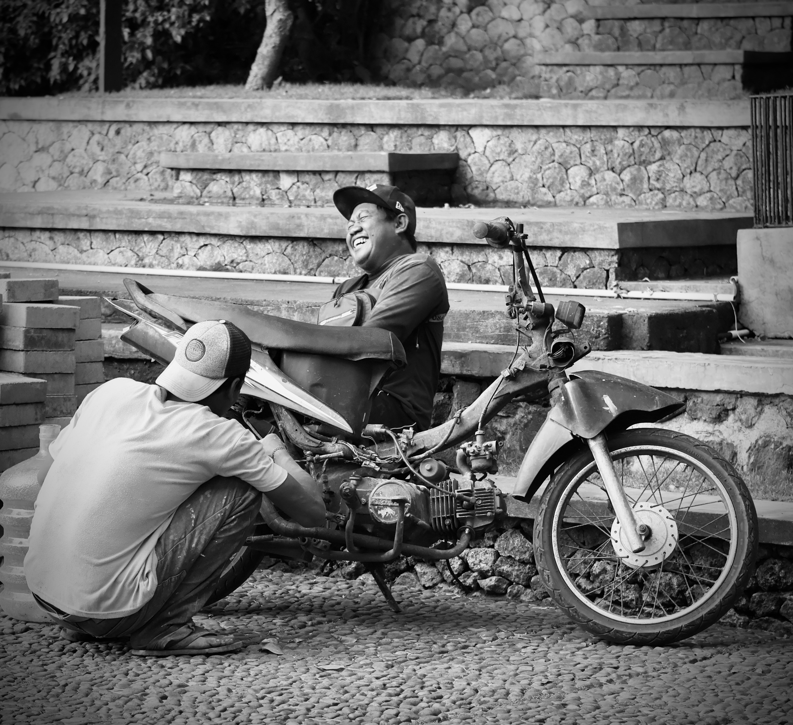
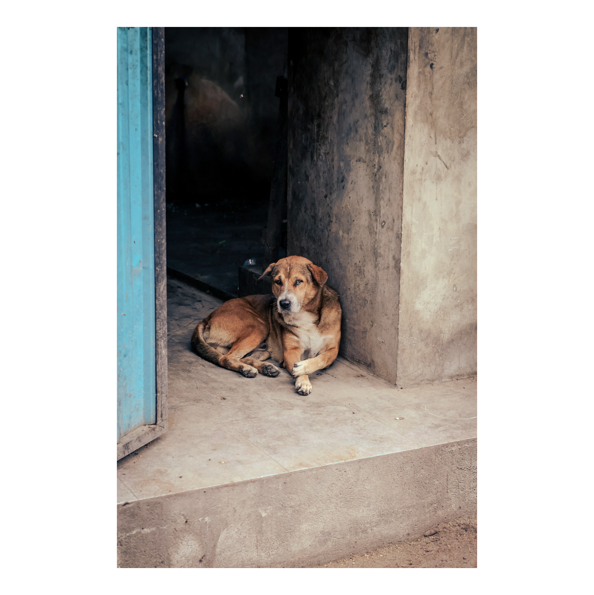
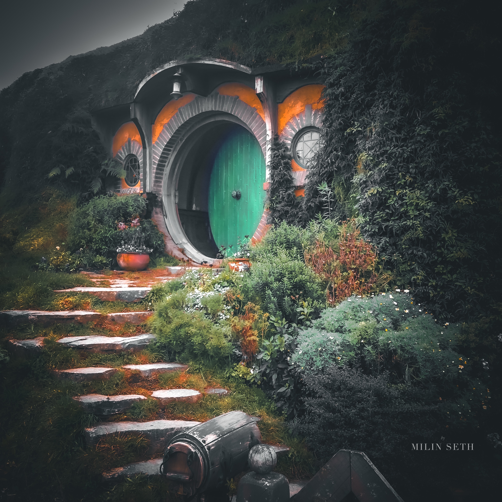

OH LA LA
A COLLECTION OF CLASSIC EN-PLEIN-AIR STYLE INSPIRED PHOTOGRAPHY







My work captures the endless beauty of coastal landscapes, the rhythmic dance of waves against sand, and the ever-changing moods of the ocean that shape our shorelines.
I specialize in beach photography, capturing golden sunrises over the horizon, dramatic storm clouds rolling in from the sea, and the intimate details of shells and driftwood scattered along the shore.
From the pristine beaches of tropical paradises to the rugged coastlines of remote islands, I'm drawn to document how the ocean meets the land in all its magnificent forms. Each wave tells a story of tides, time, and transformation.